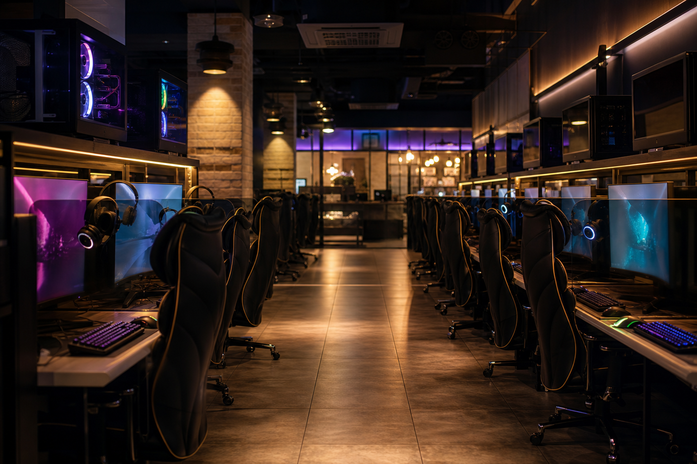

피시방
고사양 PC·빠른 인터넷으로 게임·작업하는 24시간 카페. 외국인도 쉽게 이용합니다.
피시방(PC방)은 시간당 요금으로 고사양 컴퓨터를 빌려 쓰는 곳입니다. 온라인 게임·화상회의·서류 작업·충전까지 한곳에서 해결하려는 여행객이 많습니다. 번화가·대학가·역 근처에 24시간 매장이 흔합니다.
입구에서 빈 좌석을 배정받거나 키오스크로 번호를 고른 뒤, 요금을 선불(현금·카드·QR)로 충전합니다. 화면 속 타이머가 줄면 카운터에서 연장하면 됩니다. 음료·라면·간단한 안주는 카운터나 앱으로 주문하는 매장이 많습니다.
가격 분위기
보통 시간당 1,000~2,000원 전후(심야·좌석 등급에 따라 다름). 음료·라면은 별도입니다.
이용 팁
여권은 보통 필요 없습니다. 큰 소리·옆 자리 방해는 피하세요. 개인 계정 로그아웃과 USB 사용 후 파일 삭제를 잊지 마세요. 담배 구역이 나뉜 매장이 있으니 표지를 확인하세요.
피시방(PC방)은 시간당 요금으로 고사양 컴퓨터를 빌려 쓰는 곳입니다. 온라인 게임·화상회의·서류 작업·충전까지 한곳에서 해결하려는 여행객이 많습니다. 번화가·대학가·역 근처에 24시간 매장이 흔합니다.
입구에서 빈 좌석을 배정받거나 키오스크로 번호를 고른 뒤, 요금을 선불(현금·카드·QR)로 충전합니다. 화면 속 타이머가 줄면 카운터에서 연장하면 됩니다. 음료·라면·간단한 안주는 카운터나 앱으로 주문하는 매장이 많습니다.
가격 분위기 보통 시간당 1,000~2,000원 전후(심야·좌석 등급에 따라 다름). 음료·라면은 별도입니다.
이용 팁 여권은 보통 필요 없습니다. 큰 소리·옆 자리 방해는 피하세요. 개인 계정 로그아웃과 USB 사용 후 파일 삭제를 잊지 마세요. 담배 구역이 나뉜 매장이 있으니 표지를 확인하세요.